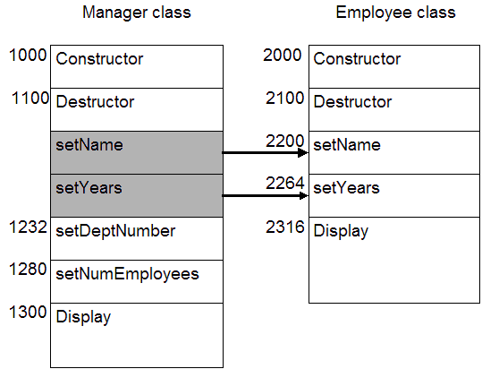

"C++: an octopus made by nailing extra legs onto a dog." - Steve Taylor
Virtual Methods and Polymorphism
The specification (Employee.h) for an Employee class:#ifndef EMPLOYEE_H
#define EMPLOYEE_H
#include <string>
class Employee
{
public:
Employee(const std::string& first, const std::string& last, float sal, int yrs);
void setName(const std::string& first, const std::string& last);
void setSalary(float newSalary);
void setYears(int numYears);
void Display() const;
private:
std::string firstName_;
std::string lastName_;
float salary_;
int years_;
};
#endif#ifndef MANAGER_H
#define MANAGER_H
#include "Employee.h"
class Manager : public Employee
{
public:
Manager(const std::string& first, const std::string& last, float sal, int yrs, int dept, int emps);
void setDeptNumber(int dept);
void setNumEmployees(int emps);
void Display() const;
private:
int deptNumber_; // department managed
int numEmployees_; // employees in department
};
#endif
|
Output:
Name: Doe, John Salary: $30000.00 Years: 2 Name: Smith, Mary Salary: $50000.00 Years: 10 Dept: 5 Emps: 8 Name: Smith, Mary Salary: $50000.00 Years: 10 |
In function 'int main1()':
error: invalid initialization of reference of type 'const Manager&'' from expression of type 'Employee'
func2(emp1); // pass an Employee object
^
note: in passing argument 1 of 'void func2(const Manager&)'
void func2(const Manager& mgr)
^
The following code won't compile. Remove the offending line(s) and then trace the execution of the program. What is the output? Why?
|
Output:
Name: Doe, John Salary: $30000.00 Years: 2 Name: Smith, Mary Salary: $50000.00 Years: 10 Dept: 5 Emps: 8 Name: Smith, Mary Salary: $50000.00 Years: 11 |
In function 'int main2()':
error: 'class Employee' has no member named 'setNumEmployees'
empPtr1->setNumEmployees(12);
^
How about this code: (Compile? Run?)static_cast<Manager *>(empPtr1)->setNumEmployees(12); // ??? static_cast<Manager *>(empPtr1)->Display(); // ???
How about this code: (Compile? Run?)static_cast<Manager *>(&emp1)->Display(); // ???
static_cast<Manager *>(&emp1)->setNumEmployees(10); // ???
This program creates an array of pointers to Employee objects. It displays each object using a for loop. Make sure you understand what the program is trying to do.
|
Output:
Name: Doe, John Salary: $30000.00 Years: 2 Name: Tufnel, Nigel Salary: $35000.00 Years: 4 Name: Smith, Mary Salary: $50000.00 Years: 10 Name: Smalls, Derek Salary: $60000.00 Years: 13 |
What we really wanted was to have each object display all of its data. The Employee objects displayed all of their data, but the Manager objects only displayed the data that they have in common with an Employee. We really wanted this to display:
Name: Doe, John Salary: $30000.00 Years: 2 Name: Tufnel, Nigel Salary: $35000.00 Years: 4 |
Name: Smith, Mary Salary: $50000.00 Years: 10 Dept: 5 Emps: 8 Name: Smalls, Derek Salary: $60000.00 Years: 13 Dept: 6 Emps: 5 |
personnel[i]->Display();
This should bring up these points:
virtual void Display() const;
A Closer Look at Static Binding vs. Dynamic Binding (Polymorphism)
On the surface, the concept of virtual methods seems strange, complex, or even magical. In fact, its all three. To understand dynamic binding of methods (virtual methods) you must first understand static binding.
Manager mgr("Mary", "Smith", 50000, 10, 5, 8);
Employee *pm = &mgr; // OK, a Manager is an Employee
mgr.Display(); // Always calls Manager::Display() regardless of virtual keyword
pm->Display(); // Depends whether or not Display() is virtual in the base class
This is simply because a derived class is-a-kind-of base class.
This is because a base class is-NOT-a-kind-of derived class.
Incorrect:virtual void Display() const;
virtual void Employee::Display() const
{
// Code to print the object goes here
}
Although the virtual keyword is not required in the derived classes, it's a good idea to include it as a way to document the code.
virtual void Display() const final;
Employee emp("John", "Doe", 30000, 2);
Manager mgr("Mary", "Smith", 50000, 10, 5, 8);
Employee* empPtr = &emp; // Nothing fancy here
Manager* mgrPtr = &mgr; // Nothing fancy here
emp.Display(); // Employee::Display()
empPtr->Display(); // Employee::Display()
mgr.Display(); // Manager::Display()
mgrPtr->Display(); // Manager::Display()
// Polymorphism is realized now
empPtr = &mgr; // Safe and legal (Manager is an Employee)
empPtr->Display(); // Depends on "virtualness" of Display()
// if Display() is virtual, Manager::Display()
// if Display() is non-virtual, Employee::Display()
Without virtual methods: (i.e. Employee::Display() is NOT marked as virtual)
int main()
{
// Create an Employee and a Manager
Employee emp("John", "Doe", 30000, 2);
Manager mgr("Mary", "Smith", 50000, 10, 5, 8);
// Display them
emp.Display(); // Compiler/linker generated JUMP to address 2316
mgr.Display(); // Compiler/linker generated JUMP to address 1300
Employee *pe = &emp; // OK
Employee *pm = &mgr; // OK, a Manager is an Employee
// Display them
pe->Display(); // Compiler/linker generated JUMP to address 2316
pm->Display(); // Compiler/linker generated JUMP to address 2316 (pm is an Employee pointer)
return 0;
}
int main()
{
// Create an Employee and a Manager
Employee emp("John", "Doe", 30000, 2);
Manager mgr("Mary", "Smith", 50000, 10, 5, 8);
// Display them
emp.Display(); // Compiler/linker generated JUMP to address 2316
mgr.Display(); // Compiler/linker generated JUMP to address 1300
Employee *pe = &emp; // OK
Employee *pm = &mgr; // OK, a Manager is an Employee
// Display them
pe->Display(); // Compiler generated code to perform lookup at runtime.
// Finds Display() at address 2316
pm->Display(); // Compiler generated code to perform lookup at runtime.
// Finds Display() at address 1300
return 0;
}Virtual Function Tips
Virtual Method Tables
Manager *mgr = new Manager("Mary", "Smith", 50000, 10, 5, 8);
Employee *pe = mgr;
...
delete pe; // what gets called? ~Employee() or ~Manager()
// pe->~Employee() or pe->~Manager()
However, with virtual destructor:delete pe; // Compiler generated JUMP to address 2100
delete pe; // Compiler generated code to lookup function at 1100
virtual ~Base() {};
virtual ~Base() = default
Base Classes
We know that all squares are rectangles, but all rectangles are not squares. Sounds like a perfect example of an "is-a" relationship (read: inheritance).So, we sketch out the interface to our base class Rectangle:
class Rectangle
{
public:
// Constructor (default)
Rectangle(double x = 0, double y = 0, double length = 0, double width = 0);
// Rectangle-specific get/set methods
double getLength() const;
double getWidth() const;
void setLength(double);
void setWidth(double);
double getCenterX() const;
double getCenterY() const;
void SetCenter(double x, double y);
// Need to be redefined in derived classes
virtual double Area() const;
virtual void Draw() const;
virtual void Scale(double scale_x, double scale_y);
private:
double center_x_; // x-coordinate of center point
double center_y_; // y-coordinate of center point
double length_; // "long" sides
double width_; // "short" sides
};
class Square : public Rectangle
{
public:
// Constructor
Square(double x, double y, double side);
// Square-specific Get methods
double GetSide() const;
void SetSide(double side);
// Methods from Rectangle that we need to specialize
virtual double Area() const;
virtual void Draw() const;
virtual void Scale(double scale);
private:
double side_; // length of a side
};
class Square
{
public:
// Constructor
Square(double x, double y, double side);
double getCenterX() const;
double getCenterY() const;
void SetCenter(double x, double y);
double GetSide() const;
void SetSide(double side);
double Area() const;
void Draw() const;
void Scale(double scale);
private:
double center_x_; // x-coordinate of center point
double center_y_; // y-coordinate of center point
double side_; // length of a side
};
class Figure
{
public:
// Constructor
Figure(double x = 0, double y = 0);
// get/set
double getCenterX() const;
double getCenterY() const;
void SetCenter(double x, double y);
// Virtual methods common to both
virtual double Area() const;
virtual void Draw() const;
private:
double center_x_; // x-coordinate of center point
double center_y_; // y-coordinate of center point
};
Rectangle and Square are now derived from Figure:
|
|
Sample client code:
|
Output:
Drawing the rectangle: 10x3 Area: 30 Drawing the square: 6 Area: 36 |
void Rectangle::Draw() const
{
cout << "Drawing the rectangle: " << length_ << "x" << width_ << endl;
}
void Square::Draw() const
{
cout << "Drawing the square: " << side_ << endl;
}
Notes:
Abstract Base Classes
If I said: "Everyone take out a pencil and draw a figure centered at (0, 0) on an X-Y grid.", what would we see?
An (incomplete) example:
class Figure
{
public:
Figure(double x = 0, double y = 0);
virtual void Draw() const;
virtual double Area() const;
private:
double center_x_; // x-coord center
double center_y_; // y-coord center
};
Sample client code:
class Circle : public Figure { public: Circle(double x = 0, double y = 0, double radius = 0); virtual double Area() const; virtual void Draw() const; private: double radius_; };class Square : public Figure { public: Square(double x = 0, double y = 0, double side = 0); virtual double Area() const; virtual void Draw() const; private: double side_; // length of a side };
int main()
{
Circle circle(0, 0, 5); // Circle at (0,0) with radius=5
Square square(0, 0, 8); // Square at (0,0) with side=8
Figure figure(3, 9); // Figure at (3, 9)
circle.Draw(); // draws the Circle
square.Draw(); // draws the Square
figure.Draw(); // ???
return 0;
}
#include "Figure.h"
Figure::Figure(double x, double y)
{
center_x_ = x;
center_y_ = y;
}
double Figure::Area() const
{
// What's the area of a Figure?
}
void Figure::Draw() const
{
// How do you draw a Figure?
}
virtual void Draw() const = 0; // pure virtual function virtual double Area() const = 0; // pure virtual function
Figure is now an abstract base class
class Figure
{
public:
Figure(double x = 0, double y = 0);
virtual void Draw() const = 0; // pure virtual
virtual double Area() const = 0; // pure virtual
private:
double center_x_; // x-coord center
double center_y_; // y-coord center
};
int main()
{
Circle circle(0, 0, 5); // Circle at (0,0) with radius=5
Square square(0, 0, 8); // Square at (0,0) with side=8
Figure figure(3, 9); // Compile error
...
}
cannot declare variable `figure' to be of type `Figure' because the following virtual functions are abstract: virtual double Figure::Area() const virtual void Figure::Draw() const
Another Example of Polymorphism
We want to create a game where different players have different powers and strengths. This is our base class, Player:#ifndef PLAYER_H
#define PLAYER_H
#include <string>
class Player
{
public:
Player(const std::string& name, int health, int damage);
virtual ~Player();
virtual std::string WhoAmI() const = 0;
virtual void Attack(Player &other) const; // Primary attack (punch)
virtual void Attack2(Player &other) const = 0; // Secondary attack (varies)
void TakeDamage(int damage);
const std::string& getName() const;
int getHealth() const;
int getDamage() const;
bool isAlive() const;
private:
std::string name_; // The player's name
int health_; // The player's health level
int damage_; // How much damage the player can inflict
};
#endif // PLAYER_H
#include <string>
#include "Player.h"
using std::string;
Player::Player(const string& name, int health, int damage)
: name_(name), health_(health), damage_(damage)
{
}
Player::~Player()
{
// intentionally left empty
}
int Player::getHealth() const
{
return health_;
}
const string& Player::getName() const
{
return name_;
}
int Player::getDamage() const
{
return damage_;
}
bool Player::isAlive() const
{
return health_ > 0;
}
void Player::Attack(Player &player) const
{
player.TakeDamage(damage_);
}
void Player::TakeDamage(int damage)
{
health_ -= damage;
}
All 3 classes have the ability to attack (i.e. punch) another player, with varying degrees of damage. Each class will also have a secondary attack mode, which can be very different from each other.
Scout
#include "Player.h"
#include <sstream>
class Scout : public Player
{
public:
Scout(const std::string &name, int health = 50, int punch_damage = 1,
int damage2 = 5) : Player(name, health, punch_damage), damage2_(damage2)
{
}
virtual ~Scout() {};
std::string WhoAmI() const
{
std::stringstream ss;
ss << "I'm a Scout named " << getName()
<< " [" << getHealth() << "," << getDamage() << "," << damage2_ << "]";
return ss.str();
}
void Attack2(Player &player) const
{
player.TakeDamage(damage2_);
}
private:
int damage2_;
};
#ifndef SOLDIER_H
#define SOLDIER_H
#include "Player.h"
#include <sstream>
class Soldier : public Player
{
public:
Soldier(const std::string &name, int health = 75, int punch_damage = 2,
int damage2 = 3) : Player(name, health, punch_damage), damage2_(damage2)
{
}
virtual ~Soldier() {};
std::string WhoAmI() const
{
std::stringstream ss;
ss << "I'm a Soldier named " << getName()
<< " [" << getHealth() << "," << getDamage() << "," << damage2_ << "]";
return ss.str();
}
void Attack2(Player &player) const
{
player.TakeDamage(damage2_);
}
private:
int damage2_;
};
#endif
#include "Soldier.h"
#include <sstream>
class Pyro : public Soldier
{
public:
Pyro(const std::string &name, int health = 100, int punch_damage = 3,
int damage2 = 2) : Soldier(name, health, punch_damage), damage2_(damage2)
{
}
virtual ~Pyro() {};
std::string WhoAmI() const
{
std::stringstream ss;
ss << "I'm a Pyro named " << getName()
<< " [" << getHealth() << "," << getDamage() << "," << damage2_ << "]";
return ss.str();
}
void Attack2(Player &player) const
{
player.TakeDamage(damage2_);
}
private:
int damage2_;
};
This code:
// No polymorphism
Scout scout("Moe", 100, 1, 5);
Soldier soldier("Larry", 150, 2, 10);
Pyro pyro("Curly", 200, 3, 15);
cout << scout.WhoAmI() << endl;
cout << soldier.WhoAmI() << endl;
cout << pyro.WhoAmI() << endl;
And this code:I'm a Scout named Moe [100,1,5] I'm a Soldier named Larry [150,2,10] I'm a Pyro named Curly [200,3,15]
// Take the default values
Player *p[] = {new Scout("Moe"), new Soldier("Larry"), new Pyro("Curly")};
// Polymorphism
for (unsigned i = 0; i < sizeof(p) / sizeof(*p); i++)
{
cout << p[i]->WhoAmI() << endl;
delete p[i];
}
Now, we can make two teams of Players and have them fight it out:I'm a Scout named Moe [50,1,5] I'm a Soldier named Larry [75,2,3] I'm a Pyro named Curly [100,3,2]
void TestFight()
{
// Red team
vector<Player *> red_team;
red_team.push_back(new Scout("Moe", 20, 1, 5));
red_team.push_back(new Soldier("Larry", 30, 2, 3));
red_team.push_back(new Pyro("Curly", 40, 3, 2));
// Blue team
vector<Player *> blue_team;
blue_team.push_back(new Scout("Fred", 20, 1, 5));
blue_team.push_back(new Soldier("Barney", 30, 2, 3));
blue_team.push_back(new Pyro("Wilma", 40, 3, 2));
fight(red_team, blue_team);
print_results(red_team, blue_team);
delete_team(red_team);
delete_team(blue_team);
}
Full driver.cpp
stress output with 100 random players on each team
How would you support the client code below so that it compiles and runs correctly? Essentially, you need to code the functions: CopyArray, DisplayEmps, and ReleaseEmps.
int main()
{
const int size = 4;
Employee *emps[size]; // Employee default constructor?
emps[0] = new Employee("Nigel", "Tufnel", 50000, 2);
emps[1] = new Employee("Derek", "Smalls", 40000, 5);
emps[2] = new Manager("Ian", "Faith", 80000, 5, 7, 25);
emps[3] = new Manager("Bobbi", "Fleckman", 70000, 7, 9, 20);
// Make a copy of the array and return a pointer to it
Employee **dups = CopyArray(emps, size);
// Display array elements
std::cout << "***** Original array *****\n";
DisplayEmps(emps, size);
std::cout << "***** Copy of array *****\n";
DisplayEmps(dups, size);
// Delete array elements
std::cout << "***** Releasing original *****\n";
ReleaseEmps(emps, size);
std::cout << "***** Releasing copy *****\n";
ReleaseEmps(dups, size);
// Delete array
delete dups;
return 0;
}
// Displays each Employee in the array
void DisplayEmps(Employee *emps[], int size)
{
for (int i = 0; i < size; i++)
emps[i]->Display();
}
// Deletes each Employee in the array
void ReleaseEmps(Employee *emps[], int size)
{
for (int i = 0; i < size; i++)
delete emps[i]; // What function is called here?
}
Employee **CopyArray(Employee *emps[], int size)
{
// Create array to hold new pointers
Employee **copy = new Employee *[size];
// Copy from 'emps' array to 'copy' array
for (int i = 0; i < size; i++)
{
// Copy the ith element into the new array
// How is this implemented?
}
return copy;
}
orcopy[i] = new Employee(*emps[i]);// Will this compile/work?
copy[i] = new Manager(*emps[i]);// Will this compile/work?
Using the copy constructor from Employee: (implicitly generated)
***** Original array ***** Name: Tufnel, Nigel Salary: $50000.00 Years: 2 Name: Smalls, Derek Salary: $40000.00 Years: 5 Name: Faith, Ian Salary: $80000.00 Years: 5 Dept: 7 Emps: 25 Name: Fleckman, Bobbi Salary: $70000.00 Years: 7 Dept: 9 Emps: 20 |
***** Copy of array ***** Name: Tufnel, Nigel Salary: $50000.00 Years: 2 Name: Smalls, Derek Salary: $40000.00 Years: 5 Name: Faith, Ian Salary: $80000.00 Years: 5 Name: Fleckman, Bobbi Salary: $70000.00 Years: 7 |
***** Original array ***** Name: Tufnel, Nigel Salary: $50000.00 Years: 2 Name: Smalls, Derek Salary: $40000.00 Years: 5 Name: Faith, Ian Salary: $80000.00 Years: 5 Dept: 7 Emps: 25 Name: Fleckman, Bobbi Salary: $70000.00 Years: 7 Dept: 9 Emps: 20 |
***** Copy of array ***** Name: Tufnel, Nigel Salary: $50000.00 Years: 2 Dept: 0 Emps: 0 Name: Smalls, Derek Salary: $40000.00 Years: 5 Dept: 0 Emps: 0 Name: Faith, Ian Salary: $80000.00 Years: 5 Dept: 0 Emps: 0 Name: Fleckman, Bobbi Salary: $70000.00 Years: 7 Dept: 0 Emps: 0 |
But that gives us this:copy[i] = new Manager(*static_cast<Manager *>(emps[i]));
One solution would be to construct something like this:***** Copy of array ***** Name: Tufnel, Nigel Salary: $50000.00 Years: 2 Dept: -33686019 Emps: -572662307 Name: Smalls, Derek Salary: $40000.00 Years: 5 Dept: -33686019 Emps: -572662307 Name: Faith, Ian Salary: $80000.00 Years: 5 Dept: 7 Emps: 25 Name: Fleckman, Bobbi Salary: $70000.00 Years: 7 Dept: 9 Emps: 20
for (int i = 0; i < size; i++)
{
if (/* emps[i] is an Employee */)
copy[i] = new Employee(*emps[i]);
else if (/* emps[i] is a Manager */)
copy[i] = new Manager(*emps[i]);
else if (/* emps[i] is some other class */)
copy[i] = new <some_other_class>(*emps[i]);
else if (/* ... */)
copy[i] = new ...
}
Client:
Employee:// clone is a virtual method that returns a new copy of itself for (int i = 0; i < size; i++) copy[i] = emps[i]->clone();
virtual Employee *clone() const; // declaration
Employee * Employee::clone() const
{
return new Employee(*this);
}
virtual Manager *clone() const; // declaration
Manager * Manager::clone() const
{
return new Manager(*this);
}
***** Original array ***** Name: Tufnel, Nigel Salary: $50000.00 Years: 2 Name: Smalls, Derek Salary: $40000.00 Years: 5 Name: Faith, Ian Salary: $80000.00 Years: 5 Dept: 7 Emps: 25 Name: Fleckman, Bobbi Salary: $70000.00 Years: 7 Dept: 9 Emps: 20 |
***** Copy of array ***** Name: Tufnel, Nigel Salary: $50000.00 Years: 2 Name: Smalls, Derek Salary: $40000.00 Years: 5 Name: Faith, Ian Salary: $80000.00 Years: 5 Dept: 7 Emps: 25 Name: Fleckman, Bobbi Salary: $70000.00 Years: 7 Dept: 9 Emps: 20 |
Employee * Employee::create() const
{
return new Employee();
}
Manager * Manager::create() const
{
return new Manager();
}
// Deletes each Employee in the array
void ReleaseEmps(Employee *emps[], int size)
{
for (int i = 0; i < size; i++)
delete emps[i]; // What function is called here?
}
|
|
virtual
***** Releasing original ***** Employee dtor: Tufnel Employee dtor: Smalls Manager dtor: Faith Employee dtor: Faith Manager dtor: Fleckman Employee dtor: Fleckman ***** Releasing copy ***** Employee dtor: Tufnel Employee dtor: Smalls Manager dtor: Faith Employee dtor: Faith Manager dtor: Fleckman Employee dtor: Fleckman |
non-virtual
***** Releasing original ***** Employee dtor: Tufnel Employee dtor: Smalls Employee dtor: Faith Employee dtor: Fleckman ***** Releasing copy ***** Employee dtor: Tufnel Employee dtor: Smalls Employee dtor: Faith Employee dtor: Fleckman |
class Foo
{
public:
virtual void f(int value = 10)
{
cout << "Foo: " << value << endl;
};
};
class Bar : public Foo
{
public:
virtual void f(int value = 20)
{
cout << "Bar: " << value << endl;
};
};
Bar *pb = new Bar; Foo *pf = pb; pf->f(); // Bar::f(10) pb->f(); // Bar::f(20)